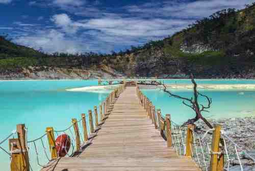
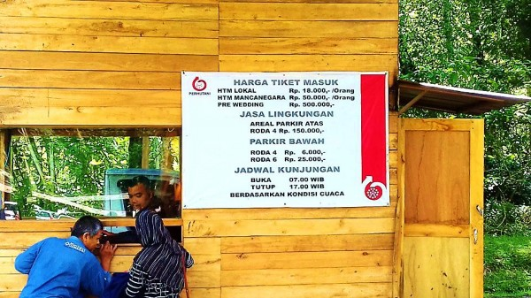

Perum Perhutani telah membuka kembali objek wisata alam (OWA) di berbagai daerah di Indonesia salah satunya Kawah Putih Ciwidey, Kabupaten Bandung.Bagi Traveler yang mulai bosan di rumah, kamu sudah bisa mengunjungi Kawah Putih Ciwidey dan menyimak harga tiket masuk Kawah Putih di sini.Diketahui sebelumnya, kawasan Kawah Putih ditutup sejak 22 Maret 2020 karena wabah virus corona atau Covid-19. Namun, kini wisatawan bisa kembali berkunjung ke Kawah Putih dan tentu saja dengan menerapkan protokol kesehatan secara ketat.Selama beroperasi, Kawah Putih akan menerima wisatawan setiap hari mulai pukul 07.00 hingga 17.00 WIB.

Terletak di ketinggian sekitar 2.400 mdpl menjadikan suhu udara di Kawah Putih menjadi sangat dingin.Rata-rata suhu kawah di kawasan tersebut adalah delapan hingga 22 derajat celcius. Travaler wajib jika berkunjung ke ciwidey datang ke tempat ini karen a tempat ini akan menyuguhkan pemandangan yang sangat indah serta menjadi spot foto terbaik untuk traveler
Nah, untuk bisa melihat objek wisata ini, traveler harus membayar tarif tiket masuk sebesar Rp 25 ribu untuk wisatawan domestik, Sementara, harga tiket masuk untuk wisatawan asing atau wisatawan mancanegara (wisman) dikenakan biaya sebesar Rp 75 ribu.Bagi kamu traveler yang membawa rombongan dan menaiki kendaraan roda empat atau mobil wisata, kamu perlu membayar biaya Rp 150 ribu per mobil.Harga tersebut belum termasuk harga tiket masuk Kawah Putih baik bagi wisatawan domestik maupun wisatawan mancanegara.Letak Kawah Putih ada di Jalan Soreang Ciwidey sekitar 50 km selatan kota Bandung, tak jauh dari Situ Patenggang.Traveler bisa mencapai kawasan wisata Kawah Putih ini dengan cukup mudah.Bahkan, sudah banyak transportrasi umum yang siap mengantarkan traveler untuk plesiran ke Kawah Putih Ciwidey.